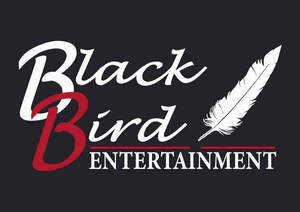
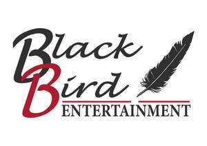

Trade Mark Journal No.2025/020 16 May 2025
UK00004167243 28 February 2025 (35,41)
Mark 1

Mark 2

- Class 35
- Management of performing artists; Auditioning of performing artists [selection of personnel]; Business management of performing artists; Artists (Business management of performing -); Employment booking services for performing artists; Negotiation of commercial transactions for performing artists; Arranging and conducting of commercial exhibitions and shows; Talent agency services [business management of performing artists]; Shows (Conducting business -).
- Class 41
- Conducting of performing arts entertainment; Performing of music and singing; Artistic management of performing artists; Entertainment services provided by performing artists; Entertainment services performed by singers; Entertainment services performed by musicians; Arranging and presenting of live performances; Booking of performing artists for events (services of a promoter); Arranging and conducting of concerts; Entertainment services performed by a musical group; Arranging and conducting of music concerts; Performance of music and singing; Singing concert services; Live band performance services; Arranging of music performances; Arranging, conducting and organisation of concerts; Live performances by a musical band; Live performances by a musical bands; Arranging and conducting of live entertainment events; Musical floor shows provided at performance venues; Services providing entertainment in the form of live musical performances; Entertainment in the form of live musical performances (Services providing -); Theatrical shows provided at performance venues; Arranging and conducting of entertainment activities; Consultancy relating to arranging and conducting of concerts; Presentation of live performances by musical bands; Live band performances; Band performances (Live -); Entertainment services for producing live shows; Directing of musical shows; Arranging and conducting of live entertainment events for charitable purposes; Performance of music; Live musical performances; Live performance services; Arranging and conducting of entertainment events; Theatrical floor shows provided at performance venues; Musical performance services; Presentation of live performances by a musical group; Production of entertainment shows featuring dancers and singers; Provision of live musical performances; Arranging of music shows; Organisation of live musical performances; Live musical theater performances; Production of stage performances; Music performance services; Arranging of concerts; Entertainment in the nature of live performances by musical bands; Entertainment services in the form of concert performances; Organising of stage shows; Conducting of entertainment activities; Conducting of live entertainment events; Rendering of musical entertainment by instrumental groups; Live performances by rock groups; Musical performances; Provision of facilities for live band performances; Live music performances; Production of live performances; Music performances; Musical concert services; Entertainment services in the form of musical vocal group performances; Theatre performances; Rendering of musical entertainment by vocal groups; Planning of plays or musical shows; Presentation of live dance performances; Entertainment in the form of recorded music (Services providing -); Arranging and conducting of entertainment events for charitable purposes; Live stage shows; Presentation of live performances by rock groups; Live musical concerts; Conducting of ceremonies for entertainment purposes; Production of entertainment shows featuring dancers; Production of entertainment shows featuring singers; Entertainment services in the form of musical group performances; Performance of dance, music and drama; Arranging of entertainment shows.
Black Bird Entertainment Ltd